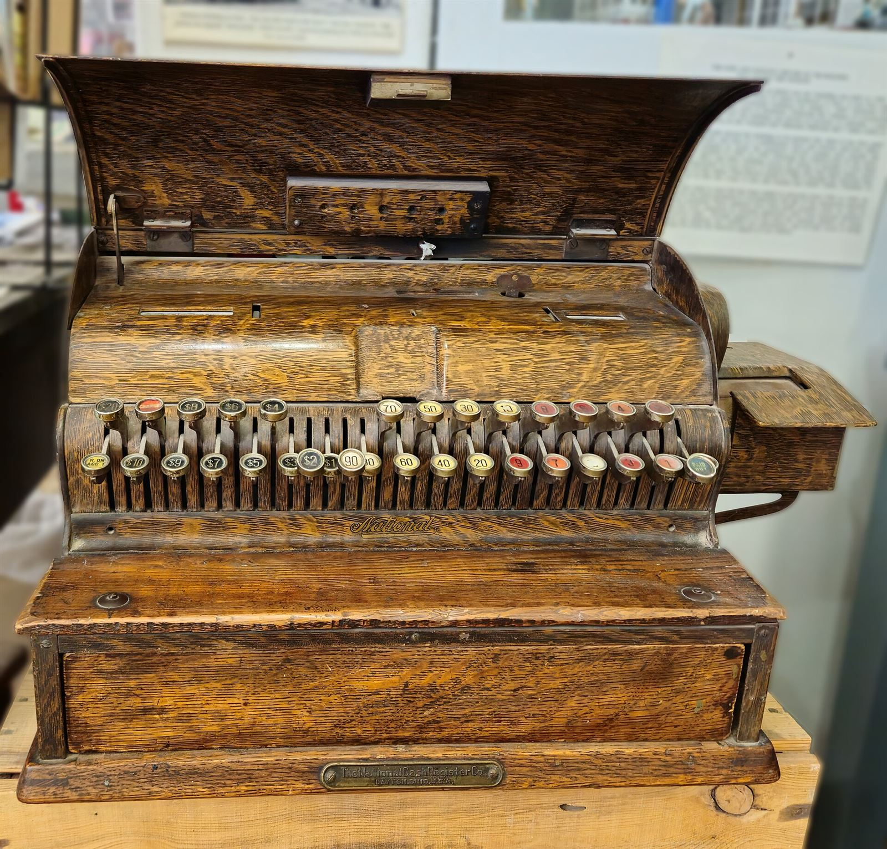

¿Tu cajero tarda horas en hacer el arqueo de caja en Excel? ¿La caja nunca cuadra al final del día? ¿No tienes evidencia de cuánto dinero se contó realmente? El 68% de los negocios en Colombia realizan su arqueo de caja de forma manual, y la mayoría ni siquiera sabe cuánto dinero pierde cada mes por discrepancias no detectadas.

El arqueo de caja es el proceso más crítico de control interno en tu negocio. Y en 2026, con inteligencia artificial, puede ser completamente automatizado. Sin errores, sin manipulación, con evidencia verificable.
¿Qué es el arqueo de caja?
El arqueo de caja es el proceso de verificar que el efectivo físico que hay en tu caja registradora coincida con las ventas registradas en tu sistema POS o punto de venta. Es la forma de controlar que el dinero que entra a tu negocio coincide con lo que se registró.
Un arqueo de caja completo incluye:
- Conteo físico de billetes y monedas por denominación
- Comparación con el reporte de ventas del POS
- Registro de la diferencia (sobrante o faltante)
- Firma del cajero y del supervisor
- Archivo del comprobante para futuras revisiones
Dato clave: Según la Superintendencia de Sociedades, el 32% de las discrepancies financieras en PYMES colombianas se originan en el punto de venta, precisamente por arqueos manuales sin supervisión.
Problemas del arqueo de caja manual en Excel
Si tu cajero usa una plantilla de Excel para hacer el arqueo de caja, estás expuesto a tres problemas graves:
1. Errores de digitación
El error humano promedio en conteo manual es del 3 al 5%. En un negocio que mueve $2.000.000 diarios en efectivo, eso son $60.000 a $100.000 en diferencias reales que nadie detecta.
2. Manipulación de datos
Un Excel es fácil de editar. Un cajero puede cambiar un número antes de enviar el reporte. No hay forma de saber si el dato original fue alterado. Sin evidencia de audio o video, es palabra contra palabra.
3. Sin evidencia verificable
¿Qué pasa si mañana un empleado te dice "yo conté bien, pero el supervisor firmó sin revisar"? No tienes evidencia de audio, no tienes video del conteo, no tienes transcripción. Solo un papel firmado que nadie verificó.
El 45% de las discrepancies en caja en negocios colombianos se atribuyen a procesos sin supervisión directa. No es falta de honestidad — es la ausencia de un sistema de control.
Cómo automatizar el arqueo de caja con IA en 5 pasos
La inteligencia artificial ha transformado el arqueo de caja. Ya no necesitas que un cajero escriba números en Excel. El proceso se puede automatizar completamente en 5 pasos:
Paso 1: Captura automática
Un dispositivo mini PC con checkpoint de red graba automáticamente el audio y video del punto de venta cuando el cajero cierra la caja. No necesitas cámaras nuevas. Funciona con tu infraestructura existente.
Paso 2: Transcripción con IA
La inteligencia artificial transcribe cada palabra del cajero: cuántos billetes de $50.000 contó, cuántos de $20.000, cuánto dio de cambio, cuánto recibió por transferencia. Todo queda indexado y searchable.
Paso 3: Comparación automática POS vs físico
El sistema compara las ventas registradas en tu POS con el conteo físico que el cajero realizó en audio. Genera un Excel con: fecha, turno, ventas POS, conteo físico, diferencia y transcripción completa.
Paso 4: Alertas por discrepancias
Si la diferencia supera el umbral que configures (por ejemplo, $10.000), el sistema envía una alerta automática al propietario o administrador. No necesitas revisar cada Excel manualmente.
Paso 5: Entrega automática del reporte
El Excel se genera y envía automáticamente por correo electrónico, WhatsApp o Telegram al final de cada jornada. Sin intervención humana. Sin posibilidad de manipulación. Con evidencia completa.
¿Quieres automatizar tu arqueo de caja?
Arqueo Inteligente APC te entrega una mini PC configurada + checkpoint de red. Transcripción de audio, grabación de video y Excel automático al final del día.
Agenda tu demo GRATIS →Arqueo de caja Excel: plantilla manual vs Excel automatizado
Si buscas "arqueo de caja Excel" en Google, encontrarás miles de plantillas descargables. Pero todas comparten el mismo problema: son manuales. Necesitas que alguien escriba los números, y no hay forma de verificar si son correctos.
Comparación detallada:
| Característica | Plantilla Manual | Excel con IA Automática |
|---|---|---|
| Quién escribe los datos | El cajero | El sistema automáticamente |
| Posibilidad de error humano | 3-5% | 0% |
| Manipulación de datos | Fácil de editar | Integridad garantizada |
| Evidencia del proceso | Papel firmado | Audio + Video + Transcripción |
| Tiempo de arqueo | 1-2 horas | 5 minutos |
| Reporte automático | No | Sí (correo/WA/Telegram) |
| Búsqueda histórica | Revisar carpetas | "¿Qué pasó el martes 15?" → Resultado |
Caja registradora sistematizada con IA
Si ya tienes una caja registradora o sistema POS, estás un paso adelante. Pero un POS solo registra ventas. No sabe cuánto dinero hay en la caja. No sabe quién contó. No tiene evidencia del cierre.
Una caja registradora sistematizada con IA va más allá:
- Registra automáticamente el cierre de cada turno
- Compara ventas POS con conteo físico en tiempo real
- Genera reportes sin intervención humana
- Alerta sobre discrepancias mayores al umbral configurado
- Mantiene evidencia audio/video de cada arqueo
- Permite búsqueda por fecha, turno, cajero o monto
Caso real: Un restaurante en Bogotá pasaba de $150.000 a $300.000 mensuales en diferencias de caja. Después de implementar arqueo automatizado con IA, las discrepancias se redujeron a menos de $10.000 al mes.
Cuadre de caja diario: la rutina que te da control
El cuadre de caja diario no es un trámite burocrático. Es tu primera línea de defensa contra pérdidas. Pero solo funciona si es consistente, verificable y con evidencia.
Con un sistema automatizado, tu cuadre diario se convierte en:
- Automático: El sistema genera el Excel sin que nadie toque un teclado
- Verificable: Cada dato tiene evidencia de audio y video
- Comparativo: POS vs físico, turno vs turno, sede vs sede
- Alertante: Discrepancias detectadas al instante
Calcula cuánto pierdes cada mes
Usa nuestra calculadora gratuita para estimar cuánto te cuesta el arqueo manual de caja y cuánto podrías ahorrar con automatización.
Calcular mi pérdida →IA para Excel: más allá del arqueo de caja
La inteligencia artificial no solo sirve para arqueos de caja. Puede automatizar todo tu proceso de control interno:
- Transcripción de audio: Cada conversación del punto de venta queda indexada
- Búsqueda por texto: "¿Qué pasó a las 3:45?" → La transcripción aparece
- Detección de patrones: ¿Los faltantes son mayores los viernes? La IA lo detecta
- Reportes automáticos: Excel generado y enviado sin intervención humana
Preguntas frecuentes
¿Qué es el arqueo de caja y por qué es importante?
El arqueo de caja es el proceso de verificar que el efectivo físico coincida con las ventas registradas en el POS. Es importante porque es la única forma de detectar discrepancies, prevenir pérdidas y mantener control interno en tu negocio.
¿Cuánto tiempo toma automatizar el arqueo de caja?
La configuración completa toma entre 24 y 48 horas. Entregamos la mini PC, la conectamos a tu red y activamos la transcripción automática. Desde el primer día, tu arqueo se resuelve solo.
¿Necesito cambiar mi caja registradora?
No. Trabajamos con tu infraestructura existente. Si tienes un POS, DVR o sistema de ventas, lo conectamos directamente. No necesitas comprar equipo nuevo para automatizar tu arqueo.
¿Qué precisión tiene la transcripción de audio?
Nuestro motor de IA alcanza un 97% de precisión en transcripción de audio en condiciones normales de ruido. Cada palabra queda indexada y searchable para futuras revisiones.
¿El Excel de arqueo se envía automáticamente?
Sí. Al final de cada jornada, el sistema genera un Excel comparativo y lo envía por correo electrónico, WhatsApp o Telegram. Sin que nadie lo haga manualmente, con evidencia completa.
Conclusión
El arqueo de caja en Excel de forma manual es un proceso lento, propenso a errores y sin evidencia verificable. La inteligencia artificial ha cambiado las reglas del juego para el control interno de negocios en Colombia.
Con un sistema automatizado, tu arqueo de caja diario se resuelve en 5 minutos, con evidencia de audio y video, y un Excel que se genera y envía solo. Sin manipulación, sin errores, sin excusas.
Si quieres saber cuánto pierdes cada mes por arqueos manuales, usa nuestra calculadora gratuita. O habla con nosotros por WhatsApp y te explicamos cómo funciona en tu negocio específico.
Artículos relacionados
Agenda tu demo GRATIS
Mira en vivo cómo funciona el Arqueo Inteligente en un negocio real. Sin compromiso, sin tarjeta de crédito.
Agendar demo por WhatsApp →